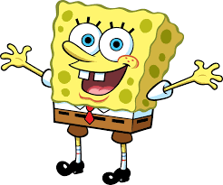

1- Algunos famosos han prestado su voz para la serie a petición de sus propios hijos.
2- Calamardo es en realidad un pulpo.
3- Su creador estudió biología marina. Stephen Hillenburg tuvo la idea de crear el personaje cuando enseñaba y estudiaba ciencias marinas.
4- El fondo de Bikini es un lugar real. El Atolón Bikini se encuentra en el Océano Pacífico y pertenece al conjunto de las Islas Marshall.
5- Los personajes son la personificación de los siete pecados capitales. La teoría explica que los personajes son los siete pecados capitales: Codicia (Cangrejo), Envidia (Plankton), Pereza (Patricio), Orgullo (Arenita), Ira (Calamardo), Gula (Gary) y Lujuria (Bob).
6- El restaurante The Krusty Krab es en realidad una trampa para langostas. Este tipo de jaula es el que utilizan los pescadores para pescar este marisco.
7- El actor que pone voz a Bob Esponja a su vez está casado con quien hace la voz de la esposa computadora de Plankton.
8- Bob Esponja trabaja en el The Krusty Krab desde hace 31 años. En la película se establece que fue empleado del mes 374 veces consecutivas, lo que da una suma de 31 años trabajando en el restaurante. No resulta sorprendente si tenemos en cuenta que una esponja marina puede vivir alrededor de 500 años.

Aqui os dejo un video por si os interesa saber mas curiosidades sobre esta serie: